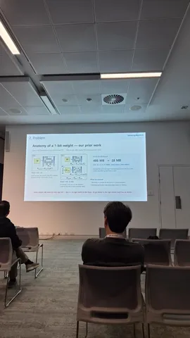
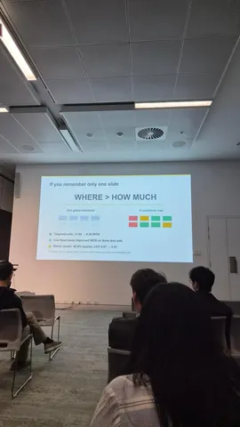
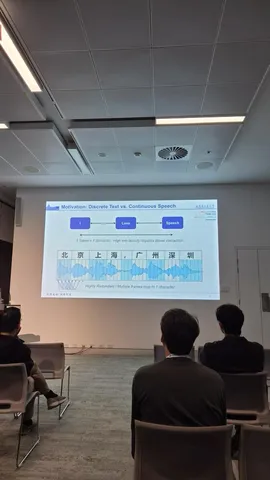

С 27 сентября по 1 октября в Сиднее проходила одна из крупнейших международных конференций по речевым технологиям. Наш коллега Николай Коновальчук, разработчик из службы технологий голосового ввода, поделился заметками и слайдами с трёх интересных устных докладов.
Pushing the Limits of Compression: Sub-1-Bit Conformer via Variable-Rank Binary Decomposition
Спикеры из Samsung заявили, что смогли побороть фундаментальное ограничение: они сжали модель ASR, в среднем потратив на каждый параметр меньше одного бита!
Конечно, в этом заявлении они слукавили. Раньше сжимали веса линейных слоёв модели до одного бита через SVID. Количество параметров при этом, условно говоря, не меняется. Теперь же добавили разложение весов на низкоранговые матрицы. Получаются две маленькие матрички той же точности в один бит. Таким образом, на один параметр слоя до сжатия уже приходится меньше одного бита в итоговом слое.
Ранг для этого низкорангового разложения подбирают индивидуально каждому слою, причём энкодер менее чувствителен к таким махинациям, чем декодер. Итого получается заметно сильнее сжать модель при том же допустимом снижении качества.
Pruning as Regularization: Sensitivity-Aware One-Shot Pruning in ASR
Следующим докладывал Julian Irigoyen. Рассказ получился развлекательным, потому что посыл был — не «каких новых высот мы добились», а «смотрите, как прикольно». Да и сам спикер очень харизматичный и много шутил.
Обычно люди думают о прунинге как об оптимизации, за которую (как и за большинство оптимизаций) нужно платить качеством. Авторы же показывают, что можно смотреть на него как на регуляризацию — и в качестве, наоборот, выиграть.
Вопрос эффективности при этом совсем не рассматривается (веса просто зануляются вместо умной организации вычислений).
Для простоты рассматривается Whisper-small. Если занулять параметры без разбора под одну гребёнку, то уже при 40% разрежённости модель ни к чему не пригодна. Можно поступить умнее.
Авторы показывают, что FFN в декодере очень хрупкие и трогать их не стоит, в то время как self-attention в декодере и в целом последние слои в энкодере довольно устойчивы и при 50% локальной разрежённости даже дают улучшение в 2,38 и 1,72 WER на LibriSpeech test-other соответственно. На других датасетах улучшение сохраняется, это не причуда LibriSpeech.
Таким образом можно глупо попрунить 40% весов и развалить модель, а можно — попрунить умно и получить те же метрики, если не лучше.
Конечно, раз уж мы разводим прунинг, хочется и ускорение от этого получить. Автор признался в Q&A, что их реальные продовые модели прунятся под 90%, но, видимо, это уже совсем другая история.
Leveraging Temporal Redundancy via Layer-wise Key-Value Pooling Attention for Efficient ASR
Третья статья напоминает о наболевшем: аудио намного тяжелее текста для трансформеров, потому что требует бо́льших последовательностей. Можно бороться с этим по-разному:
1) больше ужимать аудио перед самой трансформерной частью;
2) применять типичные GQA/MLA и их сородичей;
3) сильнее ограничивать левый контекст для стриминговых моделей.
Авторы предлагают простую альтернативу — оконный average pooling для KV-эмбеддингов. Утверждают, что если подобрать размер окна и аккуратно подхачить Relative PE, можно получить небольшое но стабильное ускорение на CPU практически без изменения метрик.
Для моделей, которые работают в нескольких разрешениях (типа Zipformer), стоит выбирать своё окно на каждое разрешение.
#YaInterspeech26
Николай Коновальчук


